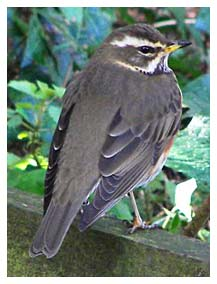

Redwing
| A regular winter visitor to the reserve. During the depths of winter, flocks may roost in the shelter of the woodland & small numbers forage for food on the woodland floor. | |
19/03/64 - Maximum count of 150 birds 01/11/80 - 500 birds 26/12/82 - 600 birds 13/10/99 - 2 birds. Earliest seasonal sighting 05/11/00 - 50 birds 03/03/02 - One in song 20/10/02 - 20 birds 28/02/04 - 30 birds 06/03/05 - 50 birds 24/02/06 - 100+ birds 25/10/06 - 50 birds 30/11/06 - 40+ birds 22/10/07 - 20+ birds 05/11/08 - 16 birds 2011 - up to 4 in the winter 25/02/12 - 10+ birds 23/03/13 - 40+ (singing heard) 15/10/14 - 15 flew over 2015 - Small numbers seen in winter. Max c.20 flying over on 11/11. sub-song heard on 22/03 2016 - 18 on 19/02 2017 - max 7 reported 2018 - max of 25 on 19/01. Not reported in the 2nd winter period 2019 - 1 on 23/01. 30+ under holly bushes on east shore on 01/02. 3 eating holly berries on 28/11 2020 - c.50 on 10/02 in Jim's field, 50+ in the east wood on 27/02 and 5 on 29/02 2021 - c.100 flew over the meadows on 14/10, a day when there was a large national influx 2022 - 12 settled birds on 22/11. Also 1 on 20/01 and 2 on 28/01 2023 - 1 in meadow on 13/02 and several in trees at south end on 11/12 2024 - 4 on 24/02 and c.20 on 12/11 in the trees on the east side 2025 - 4+ in Jim's field on 16/03. Heard on 01/11 and 10/12. 10+ was the maximum on 13/12, then 4 on 20/12, 5 feeding on Hawthorn on 25/12 and 2 on 31/12 |
 Redwing - Tony Keene |